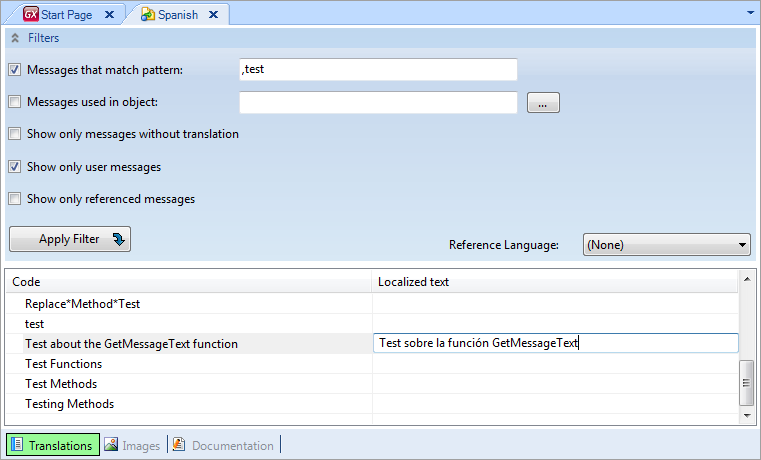
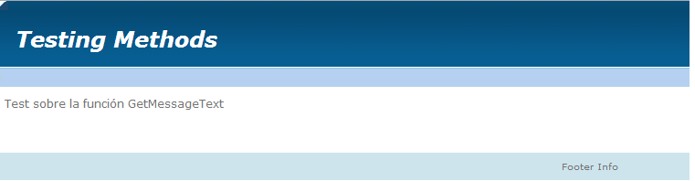

Searches the Language "LanguageObjectName" (or the current language if that parameter is omitted) for a given message code.
GetMessageText(MessageCode, [LanguageObjectName] )
Where:
MessageCode
Is the string to be translated.
LanguageObjectName
Is the name of language to be used for the translation.
The following phrase is going to be translated in a Text Block (called Text) placed in a Web Panel:
Text.Caption = GetMessageText('Test about the GetMessageText function', 'Spanish')
After the Web Panel is specified, you need to translate the phrase in the Localized text column of the Spanish language object, as follows:

Next, press F5. The Web Panel shows the control as follows:

Make sure to place an exclamation mark (!) in the GetMessageText function for both parameters when the Translation type property is set to run-time.
Text.Caption = GetMessageText(!'Test about the GetMessageText function', !'Spanish')
You will need to reference the desired texts in the code too, so the application metadata will include the desired translations. The correct code with run-time translation is:
&sample = 'Test about the GetMessageText function' // needed so the text is added to the application metadata Text.Caption = GetMessageText(!'Test about the GetMessageText function', !'Spanish')
Note: At specification-time, the GetMessageText function is used (injected by the specifier) so that in run-time literals with no exclamation mark appear translated. This may lead to performance issues because GetMessageText cannot be evaluated by the DBMS or to specification warnings or errors like the following:
spc0075 Operand getmessagetext( "M") does not match the data type of &var in the IN comparison. (Events, Line: 2)